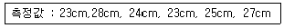
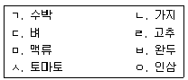

종자기능사 (2008-02-03 기출문제)
1과목: 종자(임의구분)
1. 질산칼륨(KNO3)은 종자 발아를 촉진시키는데 널리 이용되고 있다. 미국의 공인종자검사자협회(AOSA)와 국제종자사협회(ISTA)에서도 추천하고 있는 이것의 적합한 농도는?
- 0.01 ~ 0.⑤%
- 0.1 ~ 1.0%
- 1.5 ~ 2.5%
- 3.0 ~ 5.0%
(정답률: 75%)

2. 다음 식물 가운데 일반적으로 수분방법이 충매화에 속하는 식물은?
- 소나무
- 시금치
- 벼
- 당근
(정답률: 49%)
3. 다음 중 종자 저장 관리에 있어서 흡습제로서 가장 쉽게 많이 쓰이고 있는 것은?
- 소둠 클로라이드
- 염화칼슘
- 펄라이트
- 유황분말
(정답률: 94%)
4. 항온건조기법에 의해 무종자의 수분 함량을 측정하였다. 이때 a 측정관의 시료 수분함량은 14.8%, b 측정관의 시료 수분함량은 14.4% 였다. 이때 무 종자의 수분함량의 판정은?
- 산술평균치인 14.6%로 한다.
- 허용오차 범위를 초과하였으므로 다시 측정해야한다.
- 허용오차 범위를 초과하였으므로 최고 수분 14.8%를 적용한다.
- 측정자의 판단에 따른다.
(정답률: 50%)
5. 암 발아성 종자가 아닌 것은?
- 가지
- 호박
- 우엉
- 수세미
(정답률: 54%)
6. 종자 저장 중 품질을 저하시키는 조건과 거리가 먼 것은?
- 질적으로 퇴화한 종자를 보관했을 때
- 고온 다습한 저장고에 저장했을 때
- 주위 환경이 종자 저장에 부적합한 경우
- 건조제를 넣어 밀봉 하였을 때
(정답률: 83%)
7. 다음 중 우량 씨감자의 생산 및 채종에 관한 기술의 시험 연구를 담당하는 시험장은?
- 작물과학원
- 고령지농업연구소
- 호남농업연구소
- 영남농업연구소
(정답률: 71%)
8. 배의 미숙 때문에 발아가 늦어지는 자발휴면이 있는데 이 종자는 모식물에서 떨어진 후 다음 어떤 과정을 거쳐야 하는가?
- 성숙
- 완숙
- 퇴숙
- 후숙
(정답률: 90%)
9. 종자의 흡수량에 대한 설명으로 틀린 것은?
- 보리의 흡수량은 온도에 따른 차가 적지만 흡수속도는 온도가 높아짐에 따라 빨라진다.
- 담배종자의 흡수속도는 온도가 높아지면 빨라지지만 고온에서는 오히려 줄어든다.
- 벼 종자의 흡수율 및 흡수속도는 밭벼＞건도＞논벼 순이다.
- 종자 흡수량이 최대로 되는 시간은 작물의 종류에 따라 다르고 광량에 따라서도 다르다.
(정답률: 27%)
10. 종자 휴면을 타파하는 방법이 아닌 것은?
- 기계적으로 씨껍질(종피)에 상처를 낸다.
- 등숙 환경을 조절한다.
- aba를 처리한다.
- 온탕에 처리한다.
(정답률: 81%)
11. 다음 중 종자의 퇴화 증상이 아닌 것은?
- 효소활성의 저하
- 호흡의 저하
- 종자 침출액의 감소
- 유리지방산의 증가
(정답률: 82%)
12. 일반적인 종자증식 체계상의 흐름이 맞는 것은?
- 기본식물종자 → 보급종 → 원종 → 원원종
- 기본식물종자 → 원원종 → 원종 → 보급종
- 원원종 → 원종 → 보급종 → 기본식물종자
- 원원종 → 원종 → 기본식물종자 → 보급종
(정답률: 90%)
13. 종자검사결과 불합격 통지를 3월10일에 받았다. 종자산업법상 재검사 신청기한으로 가장 적합한 것은?
- 3월 20일
- 3월 30일
- 4월 9일
- 4월 20일
(정답률: 58%)
14. 종자 전염성 병의 수확 후 방제법이 아닌 것은?
- 화학제에 의한 종자의 표면 소독
- 감염종자나 이물질의 분리
- 온탕처리
- 소각처리
(정답률: 68%)
15. 종자 전염법균을 확인하는데 이용되고 있는 가장 간단하고 보편적인 배양법은?
- 한천배지 검정법
- 생물학적 검정법
- 냉동 흡지법
- 혈청학적 검정법
(정답률: 44%)
16. 다음 중 지하발아형 종자가 아닌 것은?
- 콩
- 완두
- 보리
- 옥수수
(정답률: 79%)
17. 종자의 수분 함량검사시 사용되는 장치에 대한 성명으로 틀린 것은?
- 분쇄기는 흡수성 물질로 이루어 져야 한다.
- 분석용 저울은 0.001g 단위까지 측정할 수 있어야 한다.
- 대립종자 절단시 전정가위나 외과용 메스를 이용한다.
- 체는 0.50mm, 1.00mm, 4.00mm 크기의 철제로 된 그물체가 필요하다.
(정답률: 84%)
18. 다음 채소작물 중 십자화과(배추과) 종자가 아닌 것은?
- 케일
- 꽃양배추
- 파슬리
- 냉이
(정답률: 56%)
19. 종자산업법상 채소작물 종자검사시 특정병에 해당하는 것은?
- 오이덩굴쪼갬병
- 오이녹반 모자이크 바이러스병
- 오이역병
- 수박탄저병
(정답률: 83%)
20. 꽃이 줄기의 맨 끝부분에 착생하는 유한화서가 아닌 것은?
- 단정화서
- 원추화서
- 전갈고리형화서
- 집단화서
(정답률: 47%)
2과목: 작물육종(임의구분)
21. 육종의 성과와 가장 관계가 먼 것은?
- 생산성 증대
- 품질 개선
- 재배 한계의 확대
- 식생활 개서
(정답률: 82%)
22. 벼에서 동화산물의 생산능력과 관련이 가장 적은 것은?
- 엽면적
- 광합성 능력
- 뿌리 활력
- 수당 영화수
(정답률: 81%)
23. AaBa X aabb 교잡 결과 F2에서 그 분리비가 AB(151) : Ab(49) : aB(51) : ab(149)로 나타났을 때 그 교차가는?
- 20%
- 25%
- 45%
- 50%
(정답률: 71%)
24. 양성잡종(AaBb)에서 두쌍의 대립유전자가 독립적으로 분리 할 때 암수 배우자의 유전자형과 빈도를 올바르게 표현한 것은?
- AB:Ab:aB:ab = 1:1:1:1
- AB:Ab:aB:ab = 3:3:1:1
- AB:Ab:aB:ab = 1:1:3:3
- AABB:aaBB:AAbb:aabb = 1:1:1:1
(정답률: 68%)
25. 배추과 채소작물의 복교배 육종에서 원원종 증식시에 사용되는 수분은?
- 개화수분
- 노화수분
- 말기수분
- 꽃봉오리(뇌)수분
(정답률: 79%)
26. A,B,C,D를 근교계라고 하면 (AXB)X(CXD)와 같은 교잡법은?
- 복교잡
- 3계교잡
- 다계교잡
- 합성품종
(정답률: 65%)
27. 다음 중 신품종으로서 갖추어야 할 조건들로만 짝지어진 것은?
- 균일성, 변이성, 구별성
- 균일성, 안정성, 변이성
- 균일성, 보존성, 안정성
- 균일성, 구별성, 안정성
(정답률: 70%)
28. 다음 중 동형 접합에를 나타내는 것은?
- AA
- Aa
- AB
- BC
(정답률: 83%)
29. 육성한 신품종의 구비조건 중 균일성에 관한 설명으로 올바른 것은?
- 품종의 본질적인 특성이 그 품종의 번식 방법상 예상되는 변이를 고려한 상태에서 충분히 균일한 경우를 말한다.
- 품종의 본질적인 특성이 반복적으로 증식된 후에도 그 품종의 본질적인 특성이 변하지 않고 균일한 경우를 말한다.
- 개체균이 재배할 때만 지장이 없을 정도로 균일해야한다.
- 집단군이 재배할 때만 지장이 없을 정도로 균일해야한다.
(정답률: 53%)
30. 웅성불임성을 이용하는 것보다 자가불화합성을 이용하여 1대 잡종을 채종하는 것이 유리한 접에 대한 설명으로 틀린 것은?
- 양친의 어느 쪽에서도 1대 잡종을 채종 할 수 있다.
- 유전자를 유망 계통에 이전할 때 비교적 간단하다.
- 자식 또는 형매교배를 위하여 자가불화합성을 타파하지 않아도 된다.
- 생육이나 수량 등 다른 형질에 나쁜 영향을 미치지 않는다.
(정답률: 56%)
31. 다음 종자증식 단계 중 원원종을 재배하고 있는 포장은?
- 원종포
- 원원종포
- 보급종 채종포
- 기본식물 양성포
(정답률: 55%)
32. 다음 작물들 중 암수딴그루(자웅이주) 식물은?
- 콩
- 시금치
- 오이
- 옥수수
(정답률: 68%)
33. 자연계에서 일어나는 1개 대립유전자의 유전자 돌연번이의 빈도로 가장 적당한 것은?
- 10^-4~10^-3
- 10^-6~10^-5
- 10^-8~10^-7
- 10^-9~10^-8
(정답률: 76%)
34. 조합능력을 개량하는 방법이 아닌 것은?
- 계통간 교배법
- 여교잡법
- 순환선발법
- 집단선발법
(정답률: 50%)
35. 신품종에 대한 지역 적응시험을 3년간 반복 시험하는 이유로 가장 옳은 것은?
- 지역마다 환경조건에 의한 오차가 생기기 때문에
- 지역마다 재배자의 의한 오차가 생기기 때문에
- 재배 시험구 크기에 따른 오차 때문에
- 재배방법에 따른 오차 때문에
(정답률: 89%)
36. 다음 중 복교잡 육종을 하는 가장 주된 목적은?
- 잡종강세를 더 크게 하기 위하여
- 종자 순도를 균일하게 하기 위하여
- 다른 품종에 따로따로 포함되어 있는 몇 가지 형질을 한 품종에 모으고자 할 때
- 종자를 더 크게 하기 위하여
(정답률: 67%)
37. 세계 각지에서 수집한 재배식물과 근영종을 가지고 지리적 미분법으로 재배식물 기원에 대해 연구한 학자는?
- 멘델
- 바비로프
- 다윈
- 뮐러
(정답률: 66%)
38. 단위생식에 의하여 생긴 종자를 가리키는 것은?
- 단종
- 위잡종
- 1대잡종
- 종각잡종
(정답률: 85%)
39. 식물에서 많이 볼 수 있는 웅성불임성이나 자가불화합성은 다음 중 어느 격리기구에 속하는가?
- 지리적 격리
- 환경적 격리
- 자연적 격리
- 생식적 격리
(정답률: 88%)
40. 벼 F2집단 중에서 6배체의 초장을 측정하였더니 측정값이 다음과 같았다. 분산의 값은?

- 25
- 5.0
- 4.4
- 4.0
(정답률: 56%)
3과목: 작물(임의구분)
41. 옥수수를 교배 하였을 때 잡종강세가 가장 크게 나타나는 것은?
- 단교잡종
- 복교잡종
- 3계교잡종
- 변형단교잡종
(정답률: 60%)
42. 채소의 식물학적 분류에서 고추 감자 토마토 피망은 무슨과에 속하는가?
- 박과
- 백합과
- 가지과
- 국화과
(정답률: 89%)
43. 다음 중 광합성 작용에 가장 효과적인 빛은?
- 자외선
- 적외선
- 가시광선
- 베타선
(정답률: 72%)
44. 다음 분류 중 식용작물이 아닌 것은?
- 벼
- 보리
- 옥수수
- 참깨
(정답률: 92%)
45. 벼 품종의 내도복성 품종의 특성은?
- 키가 작고 줄기의 밑동이 굵다.
- 키가 작고 줄기의 밑동이 가늘다.
- 키가 크고 줄기의 밑동이 굵다.
- 키가 크고 줄기의 밑동이 가늘다.
(정답률: 78%)
46. 다음 중 작물생육에 필요한 미량원소 군으로만 이루어져 있지 않은 것은?
- 철, 망간, 붕소, 마그네슘
- 구리, 망간, 붕소, 염소
- 아연, 몰리브덴, 망간, 철
- 망간, 철, 아연, 염소
(정답률: 61%)
47. 다음 작물의 품종에 대한 설명으로 옳은 것은?
- 품종은 린네의 식물학상 분류의 기본 단위이다.
- 재래종은 품종이라고 할 수 없고 단지 육성종만 품종에 해당된다.
- 1대 잡종은 유전자형이 완전헤테로이므로 품종으로 취급할 수 없다.
- 타식성 작물의 품종은 실용적 형질에서만 유전적으로 고정되고 전체적 유전적 조성은 어느 정도 잡다하여도 된다.
(정답률: 45%)
48. 벼의 일생 중 물의 소요량이 가장 많은 시기는?
- 수잉기
- 묘대기
- 활착기
- 분얼기
(정답률: 88%)
49. 고구만의 덩이뿌리 비대가 최대가 되는 시기는?
- 8월 중하순
- 9월 중하순
- 10월 상중순
- 11월상중순
(정답률: 59%)
50. 산성 토양에서 적응성이 매우 강한 작물은?
- 콩
- 호밀
- 시금치
- 양파
(정답률: 73%)
51. 생력화 재배의 가장 큰 효과에 해당하는 것은?
- 생산비의 절감
- 품질의 향상
- 병해충 경감
- 수량의 증대
(정답률: 75%)
52. 벼 기계 이앙용 중묘의 육묘과정의 순서가 옳은 것은?
- 파종 → 출아 → 녹화 → 경화
- 파종 → 녹화 → 경화 → 출아
- 출아 → 파종 → 녹화 → 경화
- 녹화 → 경화 → 파종 → 출아
(정답률: 66%)
53. 사과 적진병을 예방하기 위한 방법 중 옳은 것은?
- 아그배나무 대목을 사용하지 말고 석회를 주어 토양을 개량한다.
- 중간 기주인 향나무를 제거하고 비 온 후 살균제를 살포한다.
- M26,M9 대목을 이용하며 망간을 충분히 시비한다.
- 바이러스에 의해 전염하므로 진딧물 제거에 힘쓴다.
(정답률: 75%)
54. 벼를 담수 직파 재배할 때 가급적 중생종이나 중 만생종을 선택하는데 이와 가장 관계 깊은 벼의 특성은?
- 내랭성
- 내병성
- 내충성
- 내도복성
(정답률: 75%)
55. 벼의 수량 구성요소가 아닌 것은?
- 등숙률
- 분얼 수
- 현미 천립 무게
- 단위 면적당 이삭 수
(정답률: 41%)
56. 만생종 벼의 꽃눈 분화 조건은?
- 고온성
- 저온성
- 단일성
- 장일성
(정답률: 45%)
57. 품종이 지녀야 할 조건이 아닌 것은?
- 품종간의 교잡이 잘 이루어져야한다.
- 지역의 환경에 대한 적응성이 커야 한다.
- 품종 고유의 성질이 매년 변하지 않아야 한다.
- 품종의 모든 개체들이 모두 똑같은 성질을 지녀야 한다
(정답률: 23%)
58. 작물 기원 중심지 중 벼의 원산지는?
- 지중해 연안
- 인도 북부지방
- 아프리카 북부지방
- 아시아 동남부
(정답률: 74%)
59. A품종과 B품종을 교잡하여 수량과 품질이 우수한 품종으로 개량하였다. 내병성이 약하여 병에 강한 B품종을 이용하여 내병성이 강한 품종을 만들려면 다음 중 어떤 교잡법을 이용하여야 하는가?
- AXB
- (AXB)XA
- (AXB)XB
- (AXB)X(AXB)
(정답률: 68%)
60. 다음 보기 중 이어짓기를 하여도 수량이 감소하지 않는 작물로만 짝지워진 것은?(오류 신고가 접수된 문제입니다. 반드시 정답과 해설을 확인하시기 바랍니다.)

- ㄱ, ㄹ
- ㄴ, ㅂ
- ㄷ, ㅇ
- ㅅ, ㅇ
(정답률: 57%)